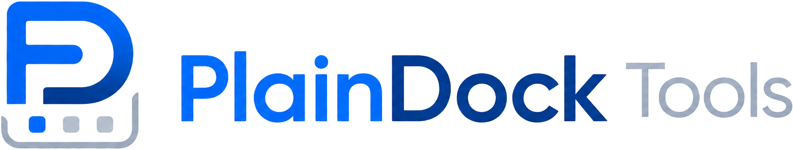
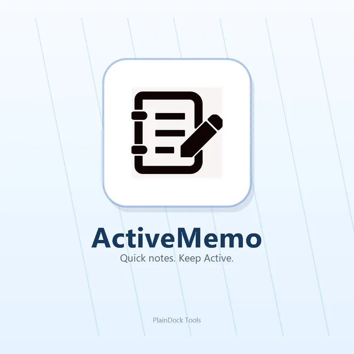
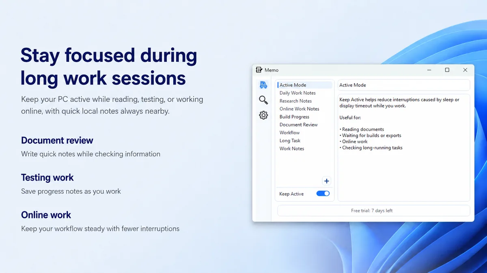
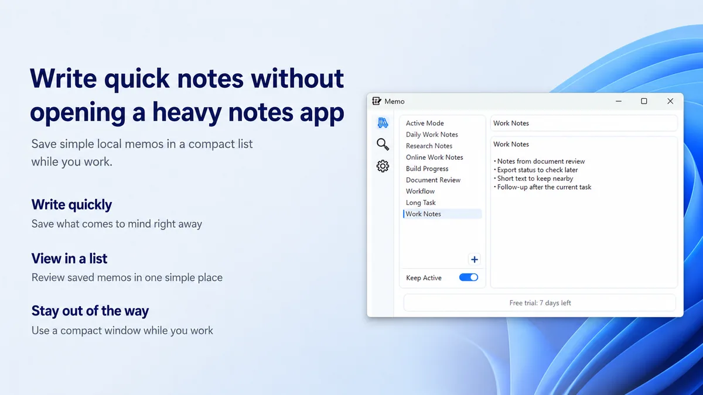
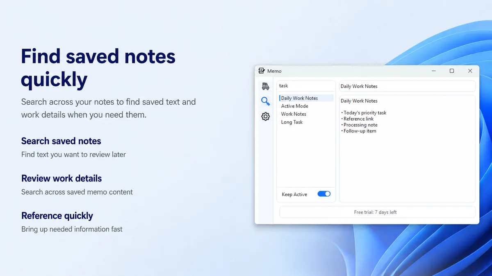
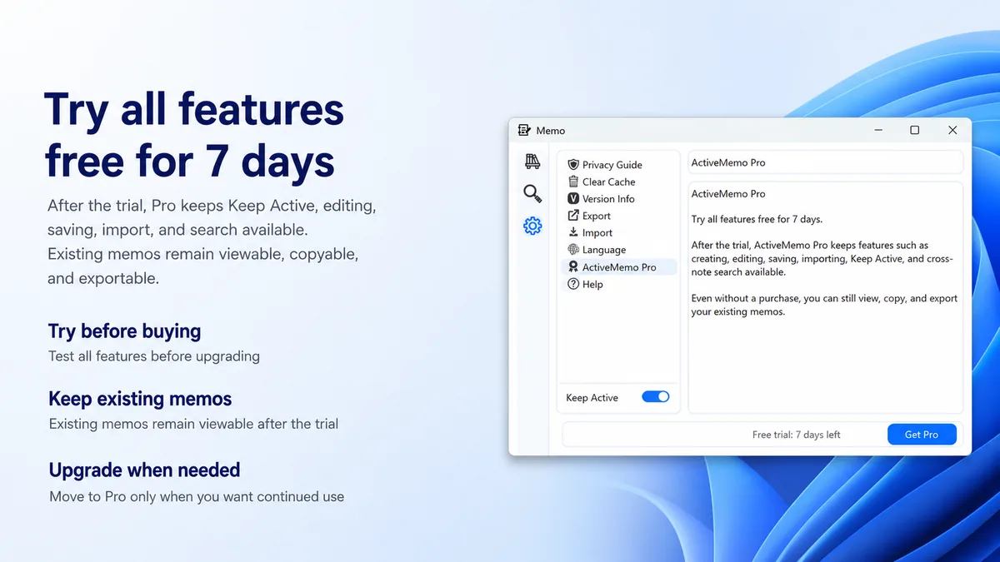

Keep Active
Help reduce interruptions caused by sleep or display timeout while documents, exports, builds, or long tasks need your PC to stay awake.


Built for focused PC work
ActiveMemo combines Keep Active support with a simple local memo list, search, import, copy, and export features in one lightweight Windows app.
Help reduce interruptions caused by sleep or display timeout while documents, exports, builds, or long tasks need your PC to stay awake.
Write checklists, reminders, task notes, and work details in a compact window without opening a heavy notes app.
Find saved text quickly, copy what you need, and export existing memos when you want to keep a backup outside the app.
The interface stays compact so your notes can remain nearby while the main work stays in front.

Use Keep Active when you are reading, testing, working online, waiting for processing, or monitoring long-running tasks.

Keep simple local memos, task details, and follow-up items in a compact list that stays out of the way.

Search across saved memo content to bring back references, task details, and work notes when you need them.
Local-first notes
ActiveMemo stores memos locally. You can copy text or export existing memos when needed, and the app-specific privacy policy explains what is stored and checked.
Trial and Pro
After the trial, ActiveMemo Pro keeps creating, editing, saving, importing, Keep Active, and cross-note search available. Existing memos remain viewable, copyable, and exportable without a purchase.
Choose a monthly or yearly subscription after the 7-day free trial. Prices may vary by country or region, and the final price is shown in Microsoft Store.
Monthly
USD 5.99
Base price. Billed monthly through Microsoft Store.
Yearly
USD 49.99
Base price. Billed yearly through Microsoft Store.

Install ActiveMemo from Microsoft Store and start with the 7-day free trial.
Get it on Microsoft Store